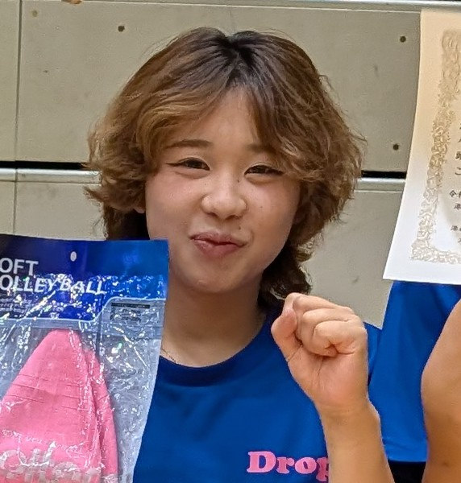
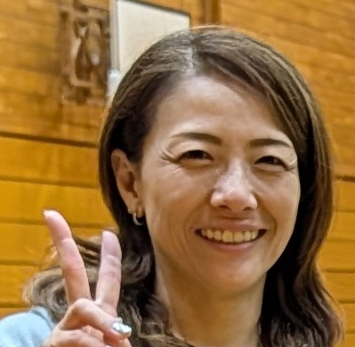
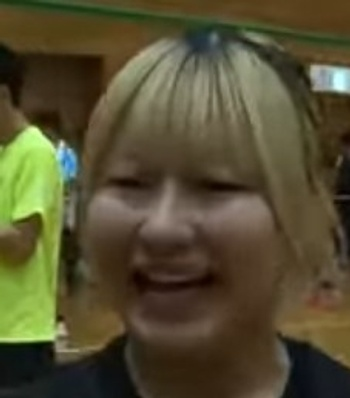
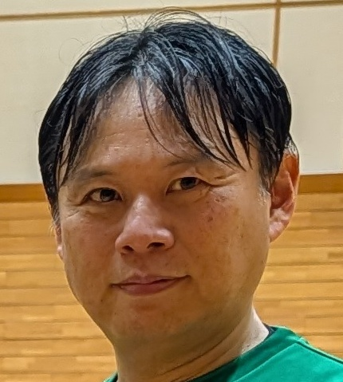
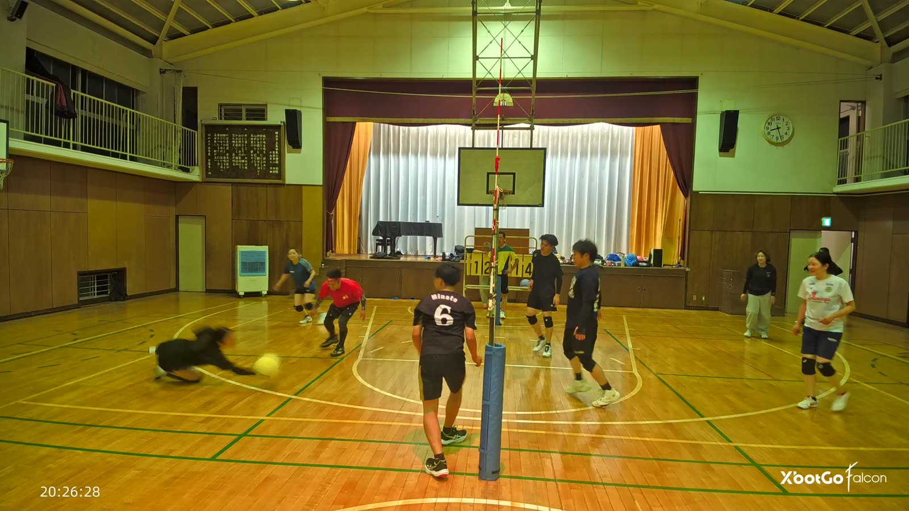
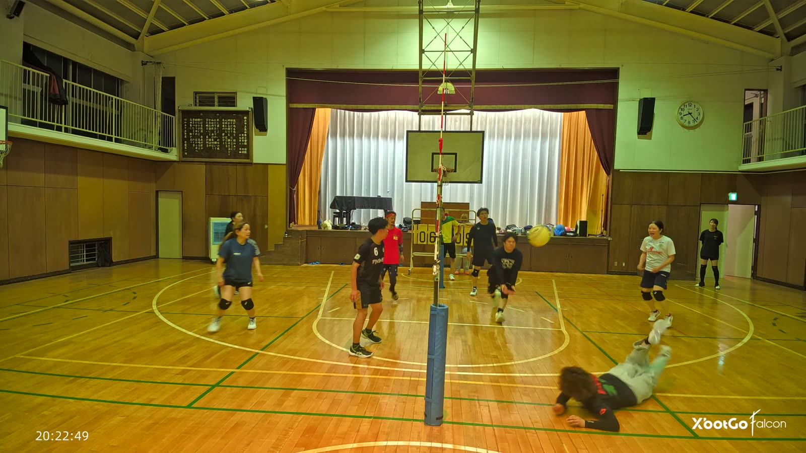
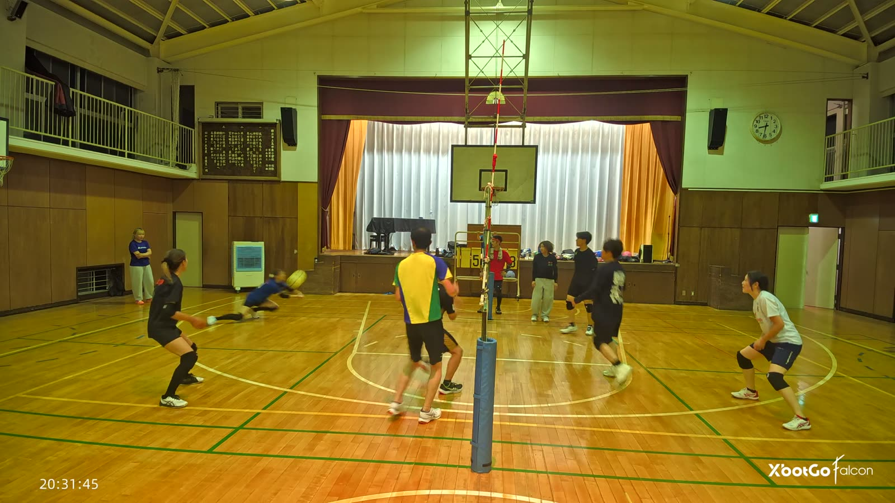
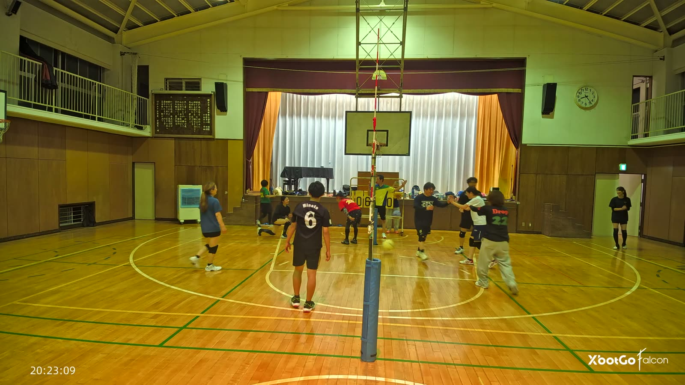
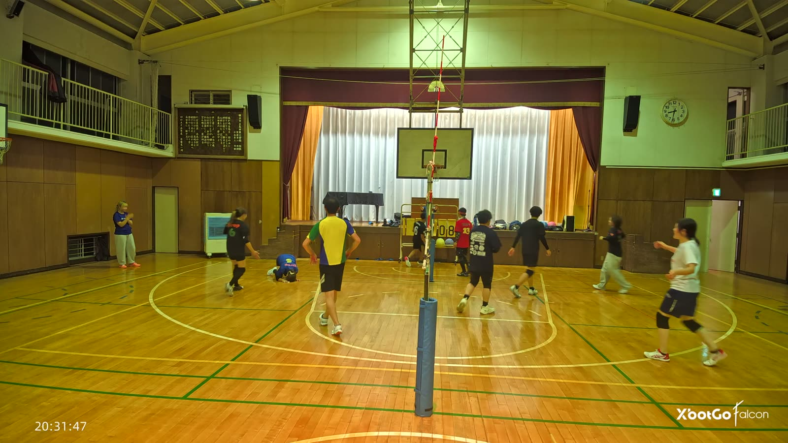
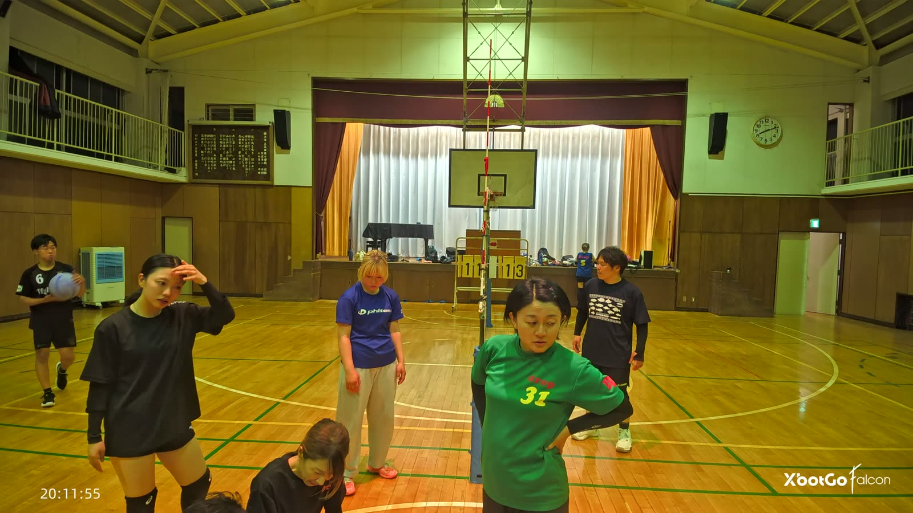

48:03。正面から来た低いボールへ迷わず飛び込み、きれいに拾いました。
3分半後の51:24には、エンドライン際まで追いついて再び飛び込み、球は味方が打てる高さまで戻ってラリーが続きました。

51:243分半のあいだに2回、同じ迫力の飛び込みが決まっています。これだけの守備範囲を1試合の中で2度見せられるのは、この日の中でも際立っていました。
46:28。フルレングスのダイブでボールに追いつきました。
続く47:45でも飛び込んで拾い、そこから16秒続くラリーの始まりになっています。

47:4559:03にも3本目の飛び込み。この日は3回、毎回同じ勢いで飛び込んでいます。
56:41。守っていた位置からわずかに逸れた球へ、体を投げ出して拾いました。

56:41続く57:43と58:29でも、落下点に走りきってから面を作る同じ型の「上げ」を見せています。この日はこの型が5例そろいました。
48:05。ラリーが続いているあいだも得点板の前を離れず、点が入った瞬間に札をめくっています。

48:05目立つ役目ではありませんが、この係がいなければ得点板は動きません。プレーの合間もずっと持ち場を守っていました。
56:43。ダイビングレシーブで倒れたかずえのもとへ、真っ先に駆け寄って助け起こしました。

56:43二人はそのまま並んで守備の位置へ戻り、プレーに戻っていきました。
35:28。床に座り込み、しばらく動けない時間が続きました。7〜8人が集まり、「立てないですよね」の声も上がるほど心配されています。

35:28この状態は3分ほど続きました。これほど多くの人が駆け寄ったのは、この日の中でもここだけです。チームの近さが表れた場面でした。
音の沸いた場面もあわせて見比べましたが、今回は珍プレー賞に選ぶ場面が見つかりませんでした。次回はここもあらためて探してみます。
この日の女性たちは、「上げる側」として特によく効いていました。両手を頭上に構えてから正面でボールを捉え、0.75〜1.0秒後に味方が跳ぶ形(クイック)は、この日32分の実プレーの中で6本(1分あたり約0.19本)。今後の進化が楽しみです。
そしてもうひとつ。約20分ぶんの観察を通じて、失点のあとにうつむいた人は0人でした。飛び込んで届かなかった選手も、その場で笑って次のプレーに備えていました。
次回を楽しみにしています。
けんぴー(AI)